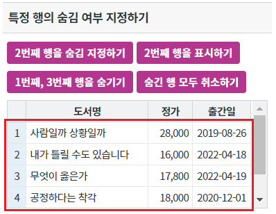
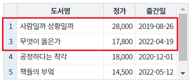
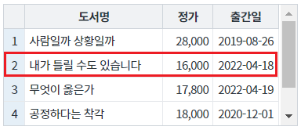
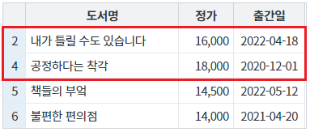
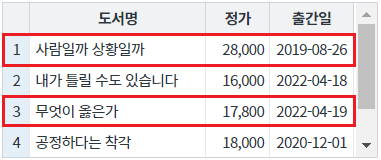
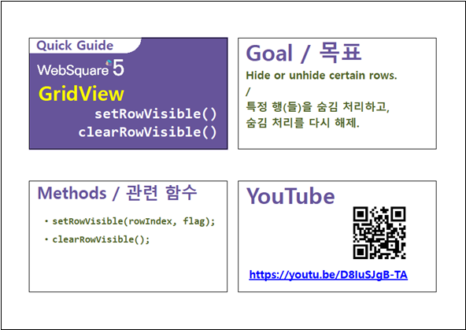

GridView의 특정 행의 숨김 여부을 지정하는 예제입니다. 이 기능은 아래의 함수를 호출하여 사용할 수 있습니다. - setRowVisible : 특정 행의 숨김 여부 설정 - clearRowVisible : 숨김 처리한 행을 모두 표시
특정 행 숨기기/보이기
숨긴 행 모두 취소하기(보이기)
영역 [특정 행의 숨김 여부 지정하기]의 GridView를 확인합니다.
GridView의 모든 행이 출력된 상태입니다.
[브라우저(Chrome) 실행 예시]

버튼 2번째 행을 숨김 지정하기을 클릭합니다.
2번째 행이 숨겨집니다.
왼쪽 행의 번호 컬럼 값을 통해 빠르게 식별이 가능합니다.
[브라우저(Chrome) 실행 예시]

버튼 2번째 행을 표시하기을 클릭합니다.
2번째 행이 표시됩니다.
왼쪽 행의 번호 컬럼 값을 통해 빠르게 식별이 가능합니다.
[브라우저(Chrome) 실행 예시]

영역 [특정 행의 숨김 여부 지정하기]의 GridView를 확인합니다.
GridView의 모든 행이 출력된 상태입니다.
[브라우저(Chrome) 실행 예시]
버튼 1번째, 3번째 행을 숨기기을 클릭합니다.
1번째, 3번째 행이 숨겨집니다.
왼쪽 행의 번호 컬럼 값을 통해 빠르게 식별이 가능합니다.
[브라우저(Chrome) 실행 예시]

버튼 숨긴 행 모두 취소하기을 클릭합니다.
숨긴 행이 모두 표시됩니다.
왼쪽 행의 번호 컬럼 값을 통해 빠르게 식별이 가능합니다.
[브라우저(Chrome) 실행 예시]

GridView의 함수 setRowVisible을 사용합니다.
[소스 코드 예시]
//예제 파일의 스크립트 "scwin.btn_ex1_onclick" 또는 "scwin.btn_ex2_onclick"를 참고하세요. //GridView 'grd_exam1'의 2번째 행을 숨김 지정하기 grd_exam1.setRowVisible(1, false); //GridView 'grd_exam1'의 2번째 행을 표시하기 grd_exam1.setRowVisible(1, true);
GridView의 함수 clearRowVisible을 사용합니다.
[소스 코드 예시]
//예제 파일의 스크립트 "scwin.btn_ex4_onclick"을 참고하세요. //GridView 'grd_exam1'의 숨긴 행 모두 취소하기 grd_exam1.clearRowVisible();
setRowVisible( rowIndex , flag )
clearRowVisible( )
[웹스퀘어5 SP5 개발 가이드] GridView
링크 : https://docs1.inswave.com/sp5_user_guide/bc10c1b82c9a2a0b#e1c4658baf7e726f
[웹스퀘어5 SP5 개발 가이드] GridView 행 표시하기 숨기기
링크 : https://docs1.inswave.com/sp5_user_guide/86bdcf48029b958b#61945a9a1a021ebf
GridView 행 표시하기 숨기기
링크 : https://youtu.be/D8IuSJgB-TA
